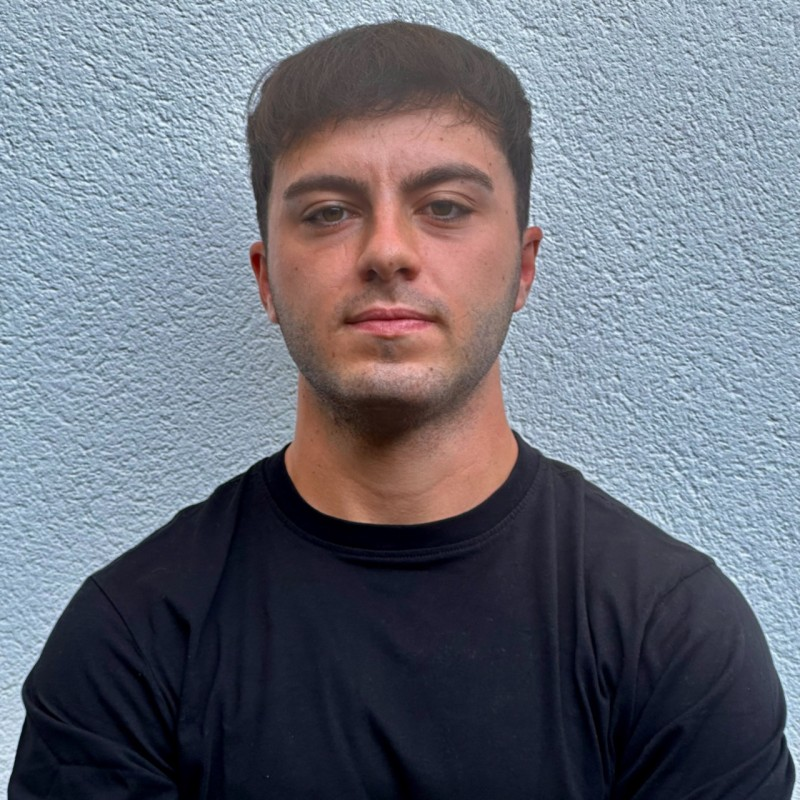

AI research portfolio
Victor Rodriguez Albendea
AI Researcher | Data Scientist | Biomedical Engineer
I work on deep learning, machine learning, multimodal modelling and quantitative analysis for biomedical and engineering problems, with a strong interest in computational pathology, medical imaging and rigorous model evaluation.
Core area
AI research, deep learning, data science and quantitative modelling
Working style
Research-driven, rigorous and practical
Toolkit
Python, R, AWS, Docker, Kubernetes and scientific reporting

About me
AI Researcher
AI research with a strong quantitative base
I am interested in AI research that stays technically rigorous and useful in practice, especially in computational pathology, medical imaging and careful model evaluation.
Alongside the biomedical side of my work, I also build on forecasting, multivariate modelling, supervised learning and operations-research projects that reinforce the quantitative side of my profile.
Generative AI
Deep learning
Forecasting and modelling
Operations research
Medical imaging
Biomedical AI
Featured project
Foundation Models for Computational Pathology
Benchmarking and evaluation pipeline for histopathology foundation models, combining whole-slide image representations and pathology report embeddings for cross-modal retrieval tasks.
Multimodal retrieval
Recall@K
Pathology reports
Open Repository
Approach
How I approach technical work
Across projects, I try to keep the same standard: rigorous evaluation, clear implementation choices, reproducible reporting and a practical link between modelling and decision-making.
Rigorous evaluation
I care a lot about fair comparisons, sensible baselines, validation strategy and metrics that actually explain how a model or system behaves.
End-to-end execution
I like taking projects from data preparation and modelling through to final figures, documentation and a public-facing technical delivery.
Readable technical communication
I try to make repositories easy to follow, with clean notebooks, representative figures and documentation that helps people understand the workflow quickly.
Applied breadth
The portfolio mixes generative AI, deep learning, forecasting, multivariate modelling and operations research without losing technical coherence.
Projects
Selected public work
I use these repositories to show how I structure, document and present technical work in public.
Published
Focus
Portfolio map
I use these four directions to organize the portfolio and make the repositories easier to read at a glance.
Generative AI
RAG systems, multimodal pipelines, foundation-model evaluation, prompt-oriented workflows and retrieval augmentation on AWS.
Machine Learning
Deep learning, classification, regression, neural networks, model comparison, validation strategy and structured evaluation across different problem settings.
Operational Research
Optimization, production scheduling, heuristic design and engineering decision support through quantitative modelling.
Quantitative Modelling
Forecasting, multivariate analysis, PCA, PLS-DA, process monitoring and statistical reasoning for technically rigorous projects.
Skills
Technical stack
Languages and workflow
Python, R, Jupyter, RMarkdown, Git, Docker and Kubernetes.
Biomedical AI
Computational pathology, medical imaging, multimodal pipelines and foundation-model evaluation.
Cloud and GenAI
Amazon Web Services, Bedrock-oriented workflows, AWS Lambda, Glue, SageMaker, and Google Cloud for GenAI experimentation.
Model families
Deep learning, convolutional neural networks, Random Forest, XGBoost, Support Vector Machine, forecasting models and optimization heuristics.
Multivariate methods
PCA, PLS, PLS-DA, process monitoring, exploratory analysis and structured interpretation of high-dimensional data.
Evaluation and reporting
Pipeline evaluation, metric benchmarks, cross-validation, recall@K analysis, cross-modal retrieval and scientific visualization.
Method
How my public reports are built
I prefer a small number of repositories that are easy to navigate, technically honest and useful for someone who wants to understand how the project was actually built.
When original data, reports or licensed material cannot be shared, I keep the public version centered on cleaned notebooks, reproducible code, representative figures and documentation that explains the workflow without exposing restricted assets.
Readable structure
Each repository is organized around the workflow: data preparation, modelling, evaluation and final reporting.
Runnable code
Whenever possible I expose the scripts or notebooks that drive the actual analysis instead of publishing results alone.
Careful publishing
Private data, sensitive reports, local paths and heavyweight artifacts stay out of the public version by design.
Contact
Portfolio links
Curriculum
Download CV
Download the latest version of my curriculum vitae in Spanish or English.
Curriculum Vitae (ES)
Updated CV in Spanish with academic background, projects and technical experience.
Download PDFCurriculum Vitae (EN)
English CV prepared for international applications, portfolio sharing and technical roles.
Download PDF